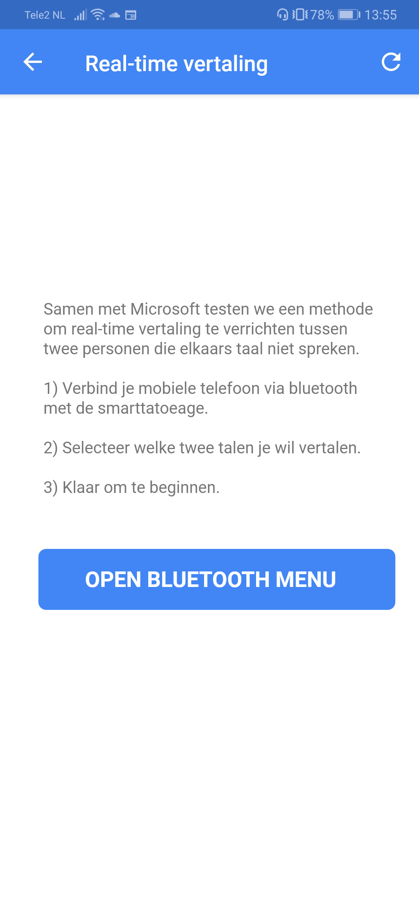
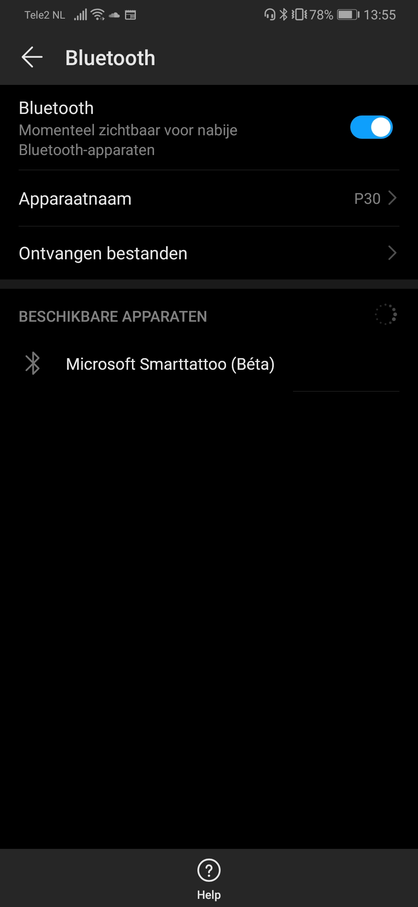
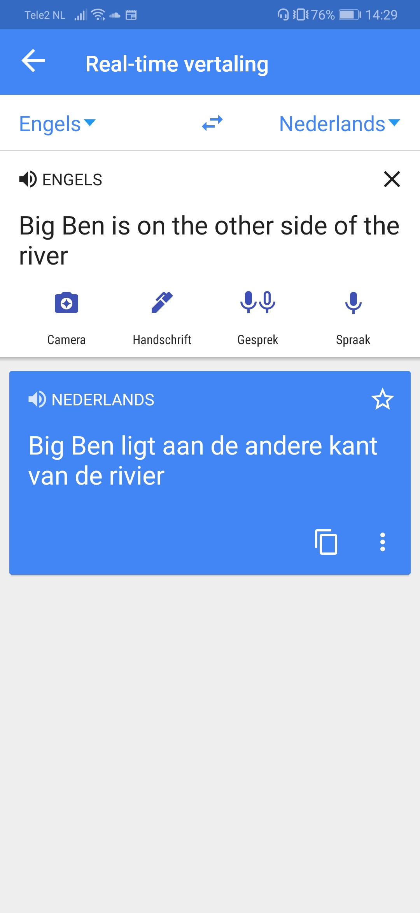
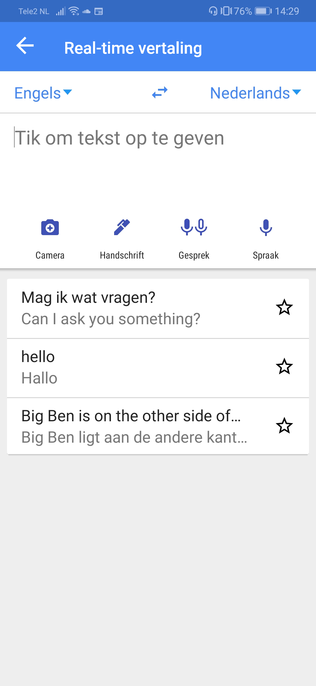

Wearables
Real-time Google Translate:
Als je op vakantie gaat naar het buitenland, is de kans groot dat ze daar geen Nederlands verstaan. In veel gebieden in de wereld verstaan ze zelfs geen Engels, dus hoe moet je bijvoorbeeld in Japan vragen waar je de lekkerste ramen kan eten? Gelukkig bestaat de technologie om moeiteloos met Google Translate context te vertalen van de ene taal naar de andere. Je zou natuurlijk de app erbij kunnen pakken, maar dan volgen waarschijnlijk zeer ongemakkelijke momenten van het steeds doorgeven van je mobiele telefoon. Om dit te voorkomen stel ik voor om een smart tatoeage te ontwikkelen die moeiteloos elke audio uit elke taal mogelijk vertaald naar de gewenste taal. Zo heb je als toerist altijd een tolk aan je lichaam hangen, het idee werkt als volgt. De smarttatoeage kan doormiddel van bluetooth verbinden met je telefoon. Via je telefoon zal de informatie worden opgehaald en vertaald, met behulp van de Google Translate app. Zodra de smarttatoeage is verbonden, geef je in de app aan welke talen je wil vertalen. Hierna hoef je alleen een knop ingedrukt te houden, zodat de smarttatoeage de audio op kan nemen en laten vertalen via de telefoon.

Afbeelding 1: Scenario schets, eerste idee

Afbeelding 2: Smarttatoo plus interactie
Scenario
Je bent op vakantie in London en je bent benieuwd waar de Big Ben is. Omdat je veel erover hebt gehoord, maar niet weet hoe dat ding eruit ziet, vraag je aan een voorbijganger waar je hem kan vinden. Het enige probleem is dat jij geen Engels kan spreken en de Engelsman geen Nederlands verstaat. Gelukkig heb je je smarttattoo om je linkerpols. Je houdt de grote knop in het midden ingedrukt en zegt in het Nederlands “Weet u waar de Big Ben is?”. Zodra je de knop loslaat, wordt de opname verzonden naar je telefoon. Via de Google Translate app wordt het direct vertaald (zie afbeelding 3 t/m 7). Uiteindelijk zal de vertaling niet alleen op de app te lezen zijn, maar ook direct wanneer het is vertaald door de speakers van de smarttattoeage heen klinken.
Afbeelding 3: Startscherm
Afbeelding 4: Uitleg + verbinden met bluetooth
Afbeelding 5: Selecteer de smarttatoeage
Afbeelding 6: Voorbeeld real-time vertaling
Afbeelding 7: Overzicht vorige vertalingen
Research
Voordat ik zelf een smarttatoo concept bedacht, heb ik online gekeken naar wat er momenteel al mogelijk is in de wereld van smarttatoos. Mijn eerste ingeving was om iets te doen met gezondheid. Een van de artikelen die ik online vond was van engaged, waarin de nieuwste technologie in smarttatoos wordt beschreven. Zo zijn er al componenten ontwikkeld die je gezondheid meten, zoals bijvoorbeeld een bloedsuiker meter die je gemakkelijk aan kan brengen op de huid. Voor mensen die meerdere malen per dag hun bloedsuiker moeten meten, zoals diabetici, wordt het leven iets makkelijker gemaakt. Verder wordt ook beschreven dat een bepaalde inkt waaruit de tatoeage bestaat kan ‘reageren op de chemische compositie van je lichaamsvloeistof’, waardoor groene inkt bijvoorbeeld aan atleten aangeeft dat ze uitgedroogd beginnen te raken, of aan diabetici dat hun bloedsuikerspiegel niet de juiste waarde heeft. Bron Het is dankzij dit artikel dat ik erachter ben gekomen dat smarttatoeages een essentieel deel uit kan gaan maken in onze levens. Echter omdat er nogal veel tatoeages rondom gezondheid worden / zijn ontwikkeld, wilde ik in een andere hoek mijn concept gaan bedenken. Ik zat na te denken over componenten die cool zouden zijn om te hebben in een tatoeage en kwam uiteindelijk uit bij het inbouwen van een microfoon, waarbij de input ervan wordt verzonden naar je telefoon. Al snel heb ik online een artikel weten te vinden van Science, waar niet alleen microfoons zijn ingebouwd in de huid van een persoon, maar ook speakers. De techniek werkt als volgt: De tatoeage bestaat uit verschillende kleine silveren draden, bedekt met polymeer lagen, zodat de stof uitrekbaar en transparant is, maar ook zodat het geluid kan produceren. Zodra een elektrisch audio signaal wordt ontvangen, zorgt de luidspreker ervoor dat de zilveren draden worden verwarmt tot ongeveer 33 graden Celsius. Door de druk van de omliggende lucht te veranderen, wordt het audio signaal nagemaakt. Deze verschillen in druk worden vervolgens door onze oren opgepikt als geluid. Bron Bluetooth chip
Reflectie
De mogelijkheden bij wearables die ik heb gezien zijn erg bijzonder. Ik had niet verwacht dat een microfoon en speaker in een kleine smarttatoeage zouden passen, maar het is toch echt al mogelijk anno 2019. Nu heb ik een paar wearables bekeken en wat mij opviel is dat veel er niet uitzien als een wearable, maar als een hoopje metaal rond je arm. Nu heet het natuurlijk een smarttatoeage en hoort het makkelijk aan te brengen zijn, maar het voelt nog niet als een product, enkel als een experiment. Ik zie smarttatoeages inderdaad als een experiment, om nieuwe functies in microvorm te testen voordat techgiganten als Apple en Samsung deze technologie kunnen gaan gebruiken in hun producten.